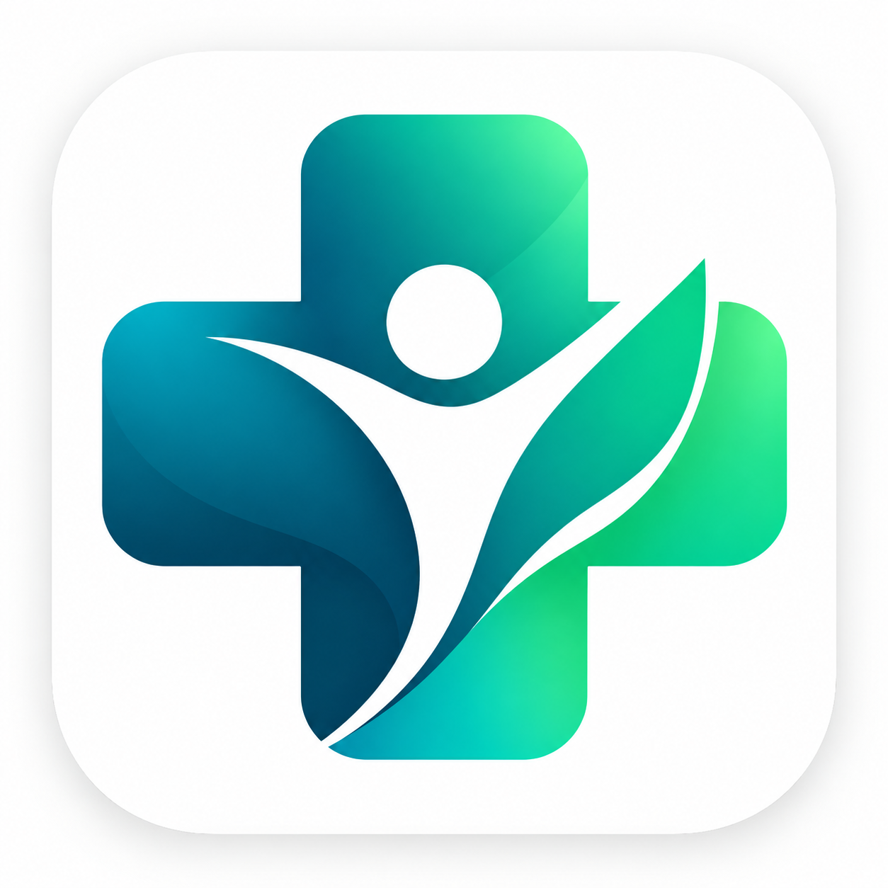

Portal do Cidadão
Cadastro, agendamentos, campanhas, solicitações, exames e informações pessoais.
Abrir portal →
Escolha o ambiente que deseja testar. O Portal do Cidadão e o Portal de Gestão são sistemas separados e utilizam o mesmo projeto Supabase.
Cadastro, agendamentos, campanhas, solicitações, exames e informações pessoais.
Abrir portal →Pacientes, atendimentos, unidades, equipe, campanhas, agenda e relatórios.
Abrir gestão →Ambiente exclusivamente para testes. Utilize contas e dados fictícios. O acesso à Gestão exige perfil autorizado de administrador ou atendente.